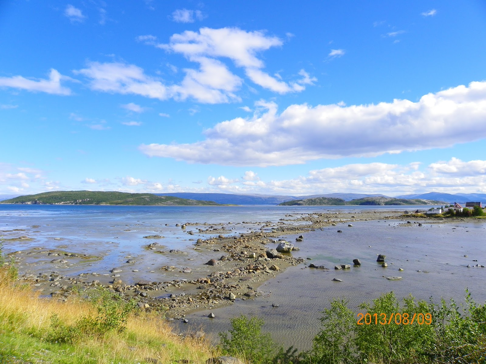
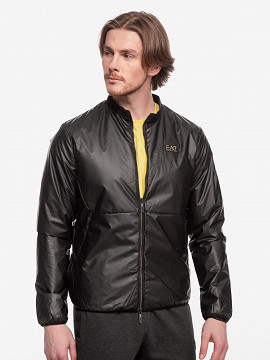
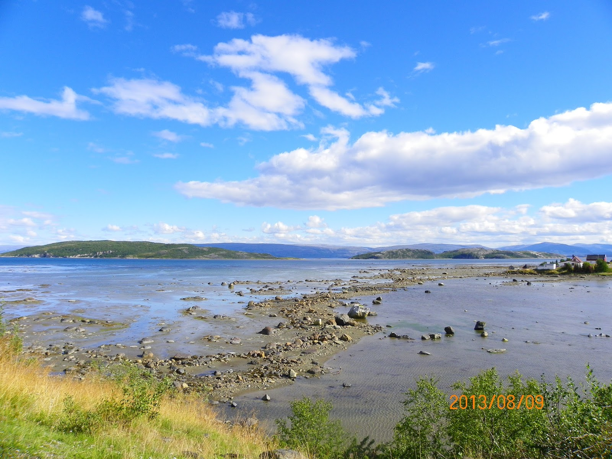
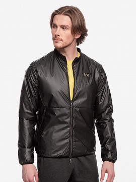

Drabužiai_vaikams DARE2B_REGATTE Žiemines_striukes_vaikams Turimi variantai Dydis 128
2020.10.30 03:25
Kontaktas El. Paštas: info@vaikudrabuzeliai.lt Prisijungti Sukurti paskyrą Sveiki, Prisijungti arba Sukurti paskyrą Lietuvių kalba English Lietuvių kalba EUR € EUR € shopping_cart Krepšelis: 0 Prekės - 0,00 € Jūsų krepšelyje nėra prekių Pristatymas Nemokama Viso 0,00 € Pirkti Pagrindinis Mergaitėms Suknelės, sijonai, suknelių komplektukai, sarafanai. Džemperiai, megztiniai, marškinėliai, švarkeliai, liemenės Kelnės, tamprės, džinsai Komplektai ir sportinė aprangytė Tapukai kūdikiams. Mergaičių kojinės, pėdkelnės Smėlinukai, pižamos, bodžiukai, šliaužtinukai marškiniai Striukės, kombinezonai. Berniukams Megztiniai, džemperiai, golfai, liemenės Smėlinukai, pižamos, bodžiukai, šliaužtinukai, marškinėliai, siaustinukai Komplektai ir sportinė apranga Striukytės, kombinezonai Tapukai kūdikiams, pirmieji batukai Kojinės, pėdkelnės Kelnės, džinsai Naujos prekės Krikšto rūbai mergaitėms ir berniukams. Išpardavimas Pagrindinis REGATTA DARE2b apranga DARE2B mėlyna Drabužiai REGATTA DARE2b apranga Disney Berniukams Megztiniai, džemperiai, golfai, liemenės Smėlinukai, pižamos, bodžiukai, šliaužtinukai, marškinėliai, siaustinukai Komplektai ir sportinė apranga Striukytės, kombinezonai Tapukai kūdikiams, pirmieji batukai Kojinės, pėdkelnės Kelnės, džinsai Mergaitėms Suknelės, sijonai, suknelių komplektukai, sarafanai. Džemperiai, megztiniai, marškinėliai, švarkeliai, liemenės Kelnės, tamprės, džinsai Komplektai ir sportinė aprangytė Tapukai kūdikiams. Mergaičių kojinės, pėdkelnės Smėlinukai, pižamos, bodžiukai, šliaužtinukai marškiniai Striukės, kombinezonai. Naujos prekės Krikšto rūbai mergaitėms ir berniukams. Aksesuarai Išpardavimas Avalynė Prekių ženklai Geriausiai parduodamos −40% −40% Greita peržiūra
Berniukiškas klasikinis kiostiumas, trijų dalių iki 9 m.
Atsiliepimas(-ai): 0Klasikinį kostiumėlį sudaro: 80% medvilninis švarkas tamsiai pilkos spalvos, turintys dvi kišenes priekyje, užsegamas sagutėmis. Marškinėliai stilingi 80 %, medvilniniai su varlyte juodos spalvos (originalus aksesuaras) ilgomis rankovėmis užsegami sagomis,su aukšta kaklo iškirpte. Madingos kelnytės su dvejomis kišenėmis, tiek iš priekio tiek iš galo,...
Kaina 22,20 € Bazinė kaina 37,00 € Daugiau Yra sandėlyje - 8,00 € -8,00 € Greita peržiūra
Prekės ženklas: Dare2B
DARE2B mėlyna
Atsiliepimas(-ai): 0DARE2B striukytė skirta žiemai ir kuo puikiausiai tiks šaltomis pavasario dienomis. Pasižymi gera kokybe ir lengva priežiūra, Turinti100% poliesterį. Striukytės nepraleidžia vėjo, drėgmės, kvėpuojančios, fiksuojasi apačioje, reguliuojami rankogaliai, apsauginis sulankstomas gaubtas, tas kas vaiką apsaugo nuo lietaus ar sniego, kišenės yra užtraukiamos...
Kaina 27,00 € Bazinė kaina 35,00 € Daugiau Išparduota Greita peržiūra
Prekės ženklas: Minoti
Minoti ekologiškos medvilnės smėlinukas
Atsiliepimas(-ai): 0Aukščiausios kokybės ilgomis rankovėmis Dryžuotos rankovės, raštuotas dizainas Užsegamas per visą kūną Sudėtis 100 proc. medvilnė, be chemikalų Atsparus pelėsiams ir antimikrobinis
Kaina 6,00 € Daugiau Yra sandėlyje Greita peržiūra
Berniukiški animuoti marškinėliai ilgomis rankovėmis 104 -116 cm.
Atsiliepimas(-ai): 0Švelnios medžiagos, šviesiai kreminės spalvos ilgomis rankovėmis. Sudėtis 95 procentai medvilnė. 5 procentai likra. Skalbti galima drabužį 30 laipsnių temperatūroje, skalbimo mašinoje, lyginti galima žemoje temperatūroje. Dydžiai 104 cm. iki 116 cm. Drabužėlio stilius, laisvalaikio, kasdieninio ir sportinio....
Kaina 6,00 € Daugiau Yra sandėlyje Greita peržiūra
Balti tapukai kūdikiams pirmieji batukai
Atsiliepimas(-ai): 0Baltos spalvos dekuoruoti žaismingu paveikslėliu zuikučiu. Tamprios medžiagos audinys - lengvai užmaunami, užsagstomi lipukais. Dydis:0-6mėn. padelio ilgis 10 cm. išorėje. Pristatymo sąlygos čia Grąžinimo informacija Saugus pirkimas
Kaina 3,00 € Daugiau Išparduota Greita peržiūra
Prekės ženklas: Dare2B
Žieminės striukės vaikams- DARE2B žalia mėlyna
Atsiliepimas(-ai): 0Dare2B vaikiška striukė yra šilta,patogi,lengva. Sportinės striukės išlaikys šilumą, jaukumą, gerai apsaugos lietingiausiu , šalčiausiu metų laiku. Striukė yra tampri, atspari vandeniui, drėgmei, nepraleidžianti vėjo. Striukė turi tvirtą užtrauktuką, 2 šonines kišenes kurios yra impregnuotos vandeniui, reguliuojamus rankogalius ir yra reguliuojama...
Kaina 35,00 € Daugiau Išparduota Visos daugiausiai perkamos -8,00 € DARE2B mėlyna
Kodas Prekės ženklas Dare2BDARE2B striuk ytė skirta žiemai ir kuo puikiausiai tiks šaltomis pavasario dienomis. Pasižymi gera kokybe ir lengva priežiūra, Turinti100% poliester į . Striukytės nepraleidžia vėjo, drėgmės, kvėpuojančios, fiksuojasi apačioje, reguliuojami rankogaliai, apsauginis sulankstomas gaubtas, tas kas vaiką apsaugo nuo lietaus ar sniego, kišenės yra užtraukiamos su užtrauktukais, turi vidinę tinklinę kišenę. Turi atspindinčių detalių padidina matomumą.
Priežiūra: tinkama skalbti automatine skalbimo mašina, tačiau nemėgsta aukštos temperatūros. Optimalu ją skalbti 40 laipsnių temperatūroje. Skalbiant automatine mašina geriau naudoti "švelnią" programą. striukę geriau nelyginti labai karštu lygintuvu. Audinys mažai glamžosi.
Aprašymas Prekė detaliau Aprašymas SUDĖTIS: 100% POLIESTERIS. Pralaidumas: 10000 gr. orui, kas užtikrina Atspari vandeniui iki 5000 mm. Pagaminta iš tvirto poliesterio ruoželinio audinio. Turi sustiprinta rankogalio apsaugą. Tipas laisvalaikio, rudeninė / žieminė. Striukės matmenys 128cm Pečių plotis 37 cm Krūtinės apimtis 86 cm Drabužio ilgis 48 cm Pristatymo sąlygos čia
Grąžinimo informacija
Saugus pirkimas
Prekė detaliau
DARE2B striuk ytė skirta žiemai ir kuo puikiausiai tiks šaltomis pavasario dienomis. Pasižymi gera kokybe ir lengva priežiūra, Turinti100% poliester į . Striukytės nepraleidžia vėjo, drėgmės, kvėpuojančios, fiksuojasi apačioje, reguliuojami rankogaliai, apsauginis sulankstomas gaubtas, tas kas vaiką apsaugo nuo lietaus ar sniego, kišenės yra užtraukiamos su užtrauktukais, turi vidinę tinklinę kišenę. Turi atspindinčių detalių padidina matomumą.
Priežiūra: tinkama skalbti automatine skalbimo mašina, tačiau nemėgsta aukštos temperatūros. Optimalu ją skalbti 40 laipsnių temperatūroje. Skalbiant automatine mašina geriau naudoti "švelnią" programą. striukę geriau nelyginti labai karštu lygintuvu. Audinys mažai glamžosi.
Sekite mus Facebook'e
Facebook Mūsų įmonė Mūsų įmonė Pristatymas Grąžinimo informacija Mūsų įmonė Saugus pirkimas Susisiekite su mumis Svetainės žemėlapis Parduotuvės Prekės Prekės Sumažinta kaina Naujos prekės Perkamiausios prekės Jūsų paskyra Jūsų paskyra Asmeninė informacija Prekių grąžinimai Užsakymai Grąžinimo važtaraščiai Adresai Kuponai Mano įspėjimai Kontaktas Kontaktas vaiku drabuziaiŠaulių g. 11- Mažvydo al. 7. Klaipėda 92134
Pirmadienis 11h - 19h.
Antradienis 11h - 19h.
Trečiadienis 11h - 19h.
Ketvirtadienis 11h - 19h.
Penktadienis 11h - 19h.
Šeštadienis 11h - 15h.
Sekmadienis nedirbame.
El. Paštas: info@vaikudrabuzeliai.lt
Naujienlaiškiai
© Copyright 2020 Vaikudrabuzeliai.lt. All Rights Reserved.- Žieminės striukės moterims - pirk internetu | ABOUT YOU
- Moteriškos Žieminės striukės eshop e50style.cz
- Drabužiai_vaikams DARE2B_REGATTE Žiemines_striukes_vaikams ...
- Ziemines striukes moterims | Sizeer.lt
- Vyriškos žieminės striukės
- Striukės vyrams internetu | Patogus pristatymas | Newmood
- Moteriškos striukės - Vulcan.lt
- STRIUKĖS VYRAMS virš 1580 modelių Žema kaina | Varle.lt
- Striukės - Paltai – Nauja kolekcija 2020 | Manzara
- Žieminės striukės vyrams | Sizeer.lt
- Žieminės striukės moterims - pirk internetu | ABOUT YOU
Temperatūrai vis žemėjant išbandykite žiemines striukes vyrams, kurios visas jūsų žiemos išvykas pavers tikru malonumu – jus maloniai apgaubs minkštas audinys, nebaisūs bus nuolat besimainantys vėjai ar net netikėtos pūgos. Jaukumo suteiks ir gobtuvas.
- Moteriškos Žieminės striukės eshop e50style.cz
Madingiausia žiemos apranga. Striukės ir paltai išpardavimo kainomis. Garantuojame, kad liksite patenkinti. Greitas pristatymas. Grąžinimo galimybė. Užsakymą išsiųsime jau kitą dieną. Jei prekė Jums netiks, grąžinsime sumokėtus pinigus. Nedvejokite, pirkite internetu populiariausioje internetinėje parduotuvėje. Primename – Kas dieną pridedame bent 20 naujų prekių ...
- Drabužiai_vaikams DARE2B_REGATTE Žiemines_striukes_vaikams ...
STRIUKĖS MOTERIMS Adidas, Bomboogie, BYoung... Žemos kainos garantija. NEMOKAMAI atsiimk vienoje iš 16 Varle.lt parduotuvių.
- Ziemines striukes moterims | Sizeer.lt
Moteriskos ziemines striukes. Norėdami sau užtikrinti komfortą ir terminę izoliaciją privalome ieškoti geriausių sprendimų. Jų rasti galima parduotuvėje Sizeer. Norint įsigyti tinkamą moterišką striukę reikia atkreipti dėmesį į keletą dalykų. Būtų gerai, kad ji turėtų apyklaklę, kuri dengia skruostus ir lūpas.
- Vyriškos žieminės striukės
Temperatūrai vis žemėjant išbandykite žiemines striukes vyrams, kurios visas jūsų žiemos išvykas pavers tikru malonumu – jus maloniai apgaubs minkštas audinys, nebaisūs bus nuolat besimainantys vėjai ar net netikėtos pūgos. Jaukumo suteiks ir gobtuvas, puoštas nusegamu dirbtiniu kailiu.
- Striukės vyrams internetu | Patogus pristatymas | Newmood
DARE2B striukytė skirta žiemai ir kuo puikiausiai tiks šaltomis pavasario dienomis. Pasižymi gera kokybe ir lengva priežiūra, Turinti100% poliesterį.Striukytės nepraleidžia vėjo, drėgmės, kvėpuojančios, fiksuojasi apačioje, reguliuojami rankogaliai, apsauginis sulankstomas gaubtas, tas kas vaiką apsaugo nuo lietaus ar sniego, kišenės yra užtraukiamos su užtrauktukais, turi ...
- Moteriškos striukės - Vulcan.lt
Moteriškos striukės,žieminė striukė, šilta striukė, striukės, striukės internetu, rubai internetu, drabuziai internetu
- STRIUKĖS VYRAMS virš 1580 modelių Žema kaina | Varle.lt
Mes siūlome jums rinktis stilingas ir tuo pačiu šiltas žiemines striukes: Striukės pakos - ne tik labai madingos, bet ir funkcionalios. Puikiai apsaugosite visą savo kūną nuo žiemos šalčio; Bomber modelio striukės - skirti modeliai, kurie papildomai izoliuoti, kad apsaugotų jus nuo sušalimo, geriausiai su gobtuvu bei kailiu.
- Striukės - Paltai – Nauja kolekcija 2020 | Manzara
Vyriškos Žieminės striukės Visada originalios firminės prekės -10% už naujienlaiškio prenumeratą Nemokamas pristatymas nuo 50 eurų 30 dienų prekės keitimui arba grąžinimui
- Žieminės striukės vyrams | Sizeer.lt
Kur įsigyti žiemines striukes moterims pigiau? Moteriškos žieminės striukės ko gero yra vienas brangiausių drabužių mūsų spintoje ir tai yra normalu. Jos turi būti aukštos kokybės, neperšlapti kai lauke lyja ar sninga, būti ganėtinai šiltos ir tuo pat metu atrodyti gražiai. Visi šie reikalavimai apsunkina darbą dizaineriams ...
Temperatūrai vis žemėjant išbandykite žiemines striukes vyrams, kurios visas jūsų žiemos išvykas pavers tikru malonumu – jus maloniai apgaubs minkštas audinys, nebaisūs bus nuolat besimainantys vėjai ar net netikėtos pūgos. Jaukumo suteiks ir gobtuvas.
Madingiausia žiemos apranga. Striukės ir paltai išpardavimo kainomis. Garantuojame, kad liksite patenkinti. Greitas pristatymas. Grąžinimo galimybė. Užsakymą išsiųsime jau kitą dieną. Jei prekė Jums netiks, grąžinsime sumokėtus pinigus. Nedvejokite, pirkite internetu populiariausioje internetinėje parduotuvėje. Primename – Kas dieną pridedame bent 20 naujų prekių ...
STRIUKĖS MOTERIMS Adidas, Bomboogie, BYoung... Žemos kainos garantija. NEMOKAMAI atsiimk vienoje iš 16 Varle.lt parduotuvių.
Moteriskos ziemines striukes. Norėdami sau užtikrinti komfortą ir terminę izoliaciją privalome ieškoti geriausių sprendimų. Jų rasti galima parduotuvėje Sizeer. Norint įsigyti tinkamą moterišką striukę reikia atkreipti dėmesį į keletą dalykų. Būtų gerai, kad ji turėtų apyklaklę, kuri dengia skruostus ir lūpas.
Temperatūrai vis žemėjant išbandykite žiemines striukes vyrams, kurios visas jūsų žiemos išvykas pavers tikru malonumu – jus maloniai apgaubs minkštas audinys, nebaisūs bus nuolat besimainantys vėjai ar net netikėtos pūgos. Jaukumo suteiks ir gobtuvas, puoštas nusegamu dirbtiniu kailiu.
DARE2B striukytė skirta žiemai ir kuo puikiausiai tiks šaltomis pavasario dienomis. Pasižymi gera kokybe ir lengva priežiūra, Turinti100% poliesterį.Striukytės nepraleidžia vėjo, drėgmės, kvėpuojančios, fiksuojasi apačioje, reguliuojami rankogaliai, apsauginis sulankstomas gaubtas, tas kas vaiką apsaugo nuo lietaus ar sniego, kišenės yra užtraukiamos su užtrauktukais, turi ...
Moteriškos striukės,žieminė striukė, šilta striukė, striukės, striukės internetu, rubai internetu, drabuziai internetu
Mes siūlome jums rinktis stilingas ir tuo pačiu šiltas žiemines striukes: Striukės pakos - ne tik labai madingos, bet ir funkcionalios. Puikiai apsaugosite visą savo kūną nuo žiemos šalčio; Bomber modelio striukės - skirti modeliai, kurie papildomai izoliuoti, kad apsaugotų jus nuo sušalimo, geriausiai su gobtuvu bei kailiu.
Vyriškos Žieminės striukės Visada originalios firminės prekės -10% už naujienlaiškio prenumeratą Nemokamas pristatymas nuo 50 eurų 30 dienų prekės keitimui arba grąžinimui
Kur įsigyti žiemines striukes moterims pigiau? Moteriškos žieminės striukės ko gero yra vienas brangiausių drabužių mūsų spintoje ir tai yra normalu. Jos turi būti aukštos kokybės, neperšlapti kai lauke lyja ar sninga, būti ganėtinai šiltos ir tuo pat metu atrodyti gražiai. Visi šie reikalavimai apsunkina darbą dizaineriams ...
 


